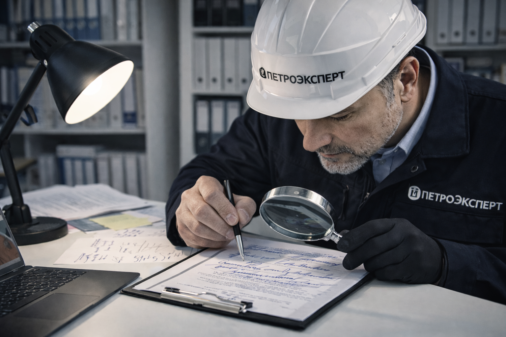

При юридических спорах часто требуется проверить подлинность подписи или авторство рукописного текста. И здесь важно привлечь к делу опытных независимых экспертов. Компания «ПетроЭксперт» специализируется на экспертизах почерка и проверках авторства с 2004 года. Внушительный опыт и высокая квалификация специалистов позволяют проводить анализ любого объема документации в минимальные сроки.
Почерковедческая экспертиза

Виды экспертиз

Экспертиза рукописного текста
Срок проведения от 10 дней. Для достоверного установления важных фактов и обстоятельств может понадобиться проверить подлинность рукописного текста или выяснить, кто его автор. Доказать авторство и определить психоэмоциональное состояние человека во время письма позволяет проведение судебной почерковедческой экспертизы.

Экспертиза подписи для суда
Срок проведения от 10 дней. Экспертиза подписи — один из видов криминалистических исследований. Посредством проведения научного анализа эксперт определяет автора исследуемой записи, его физиологические характеристики (пол, возраст), психоэмоциональное состояние и установить, при каких обстоятельствах подписывался исследуемый документ. Исследование позволяет выяснить подлинность конкретной отметки или установить факт ее фальсификации (подделки).
Что устанавливается в ходе экспертизы?
Почерковедческая экспертиза отвечает на следующие вопросы:
- является подпись на документе подлинной или поддельной;
- кто именно является автором текста
- были ли внесены изменения в документ после его подписания;
- соответствует ли подпись или текст предоставленным образцам.
В каких случаях она нужна?
Почерковедческая экспертиза востребована при решении гражданских споров. Услуга помогает определить истину, если возникают разногласия по поводу подлинности подписи на договоре, завещании или другом важном документе. Ее результаты могут стать ключевым доказательством в судебном разбирательстве.
Помимо этого, почерковедческая экспертиза используется при конфликтах с банками или страховыми компаниями. Например, если клиент утверждает, что его подпись на документе подделана, в рамках независимого исследования почерка можно подтвердить или опровергнуть это заявление.
Экспертиза также играет важную роль при разрешении экономических споров в арбитражных судах. Если возникают сомнения в подлинности подписей на финансовых документах, договорах, актах выполненных работ или товарных накладных, почерковедческий анализ устанавливает факты и помогает защитить интересы невиновной стороны.
Как выполняется почерковедческая экспертиза?
Проверка начинается с общего анализа текста или записи. Специалист изучает характеристики и особенности почерка, обращает внимание на наличие абзацев и их структуру, силу нажима при написании, манеру постановки знаков препинания, интервалы между словами и строками.
Далее специалист переходит к анализу графических особенностей, которые указывают на автора. Изучает форму букв, наклон почерка, подъем и выравнивание текста относительно полей.
Для более детального анализа применяются микроскопические и фотографические методы. Они позволяют выявить, а затем зафиксировать и сравнить детали почерка или подписи.
Сколько стоит почерковедческая экспертиза?
Стоимость экспертизы почерка или подписи зависит от трех основных факторов:
- Объема работы. Чем больше документов или образцов требуется изучить, тем выше стоимость. Исследование подписи стоит дешевле, чем анализ большого объема рукописного текста.
- Срочности. Если результаты нужны в кратчайшие сроки, цена почерковедческой экспертизы увеличится.
- Количества вопросов. Чем больше задач стоит перед экспертом и выше их сложность, тем дороже экспертиза.
Необходимые материалы
Для успешного проведения экспертизы необходимы сравнительные образцы почерка или подписи предполагаемого автора. Их происхождение должно быть достоверным. Чтобы получить точный результат, потребуются свежие образцы. Подписи или текст не должны быть старше 5 лет.
Если подходящих документов нет, их можно сделать непосредственно во время экспертизы с соглашения лица, которое проходит проверку. В этом случае автору исследуемого материала предлагается написать несколько листов текста. Он выполняет это задание в центре, где делают анализ.
Исследование может выполняться как по оригиналу документа, так и по его копии. Однако важно, чтобы дубликат был высокого качества, например цветная фотография или скан с высоким разрешением. Это позволит эксперту детально изучить все особенности почерка.
Сроки
Стоимость почерковедческой экспертизы рассчитывается индивидуально. На нее влияют сложность задачи и количество объектов, подлежащих изучению.
Необходимые документы
- Оригинал документа, содержащий исследуемую подпись (возможно проведение исследования документа по его копии);
- Свободные образцы подписей, если есть, выполненные в аналогичный период времени, что и исследуемый документ;